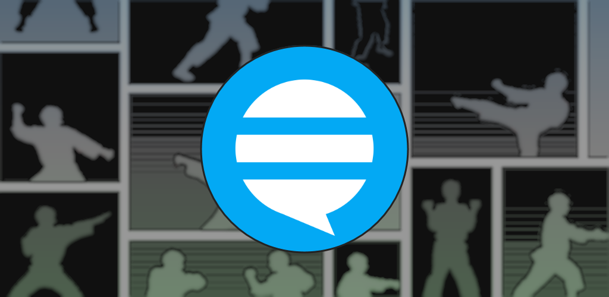
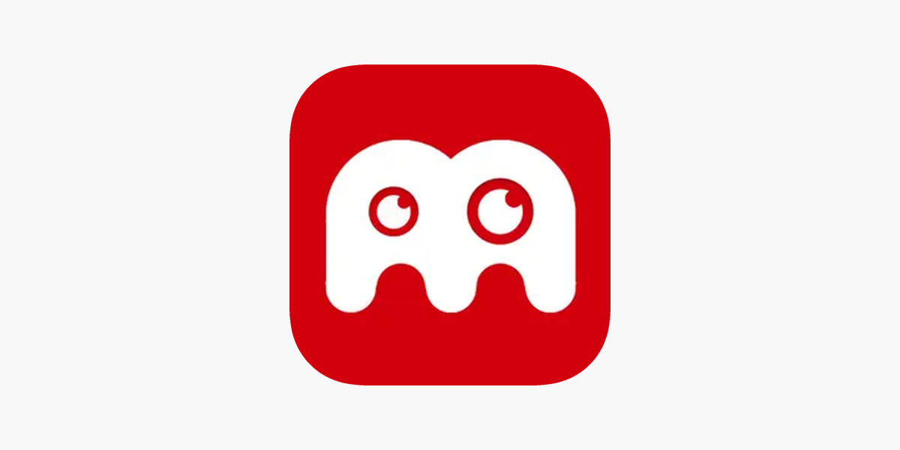
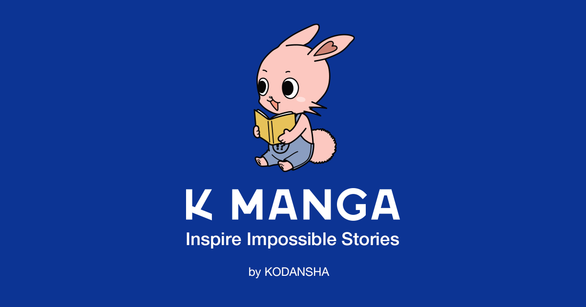

WEBTOON Los webtoons son historietas digitales que tienen varias ventajas, como su formato vertical y su accesibilidad en dispositivos móviles. Ventajas de los webtoons Formato vertical Cada episodio de un webtoon se presenta en una sola imagen vertical, lo que facilita su lectura en dispositivos móviles. Accesibilidad Los webtoons son fáciles de leer en dispositivos móviles como teléfonos inteligentes y tabletas.
MANGA PLUS Manga Plus es una aplicación que ofrece varias ventajas para los amantes del manga, como el lanzamiento simultáneo de nuevos títulos y la posibilidad de leer capítulos gratis. Lanzamiento simultáneo Manga Plus lanza los nuevos mangas semanales de forma sincronizada entre Japón y el resto del mundo. Esto cierra la brecha de tiempo entre la recepción nacional y en el extranjero. Lectura gratis Algunos mangas se pueden leer gratis en su totalidad porque no han sido licenciados en el extranjero.

TACHIYOMI Tachiyomi es probablemente el mejor y más completo lector de manga para dispositivos móviles y computadoras de escritorio . El código también es limpio y fácil de mantener, una hazaña que solo puedo atribuir a los increíbles desarrolladores que lideran el proyecto
COMIC TRIM Promueven el aprendizaje de diferentes y diversas temáticas: es un género polifacético que permite adentrarse en temas tan variados como la historia, la cultura, pasando por la ciencia y los valores éticos y sociales, y permiten abrir a los niños hacia nuevos ámbitos de interés.

MANGA GEEK Manga Geek es una aplicación que permite leer manga y cómics en varios idiomas. Entre sus ventajas se encuentran: Gran catálogo: Cuenta con una amplia base de datos de manga y cómics. Descarga de contenido: Permite descargar los títulos para leerlos sin conexión. Actualizaciones automáticas: Recibe actualizaciones automáticas a diario. Interfaz intuitiva: Cuenta con un diseño agradable y una interfaz de usuario bastante intuitiva.

AMINO MANGA Amino Manga es una aplicación que permite leer manga y anime, además de compartir opiniones y publicar trabajos propios. Ventajas de Amino Manga.Compartir opiniones: Se pueden compartir opiniones sobre el contenido de interés. Publicar trabajos propios: Se pueden publicar trabajos propios como fanfics, fanarts, cosplays, entre otros. Crear y compartir contenido: Se pueden crear y compartir blogs, encuestas, quizzes, imágenes, wikis y chats.
K MANGA ¿Por qué K MANGA? - Más de 60 series de manga originales disponibles en el momento de su publicación en Japón. - Lee un nuevo capítulo gratis todos los días. - Abarca una amplia gama de géneros, desde acción, romance, deportes, Isekai, suspenso, drama, fantasía y más.

ir a la pagina principal